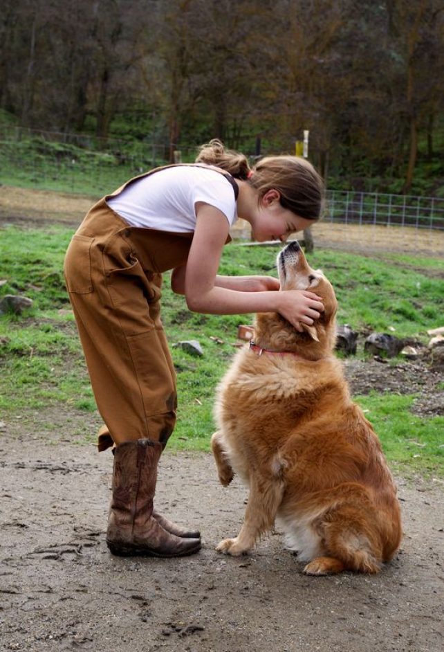

1. Volunteer and serve
Spending your free time helping others or improving your community isn’t just noble. It’s also beneficial for others and yourself. For instance, improving the environment, giving a voice to the less fortunate, and makes you feel like a member of a team. What’s more, volunteering can give you a self-esteem boost, develop new skills, and expand your network.
There are about five ways that volunteering helps you to do well — while you’re doing good. In other words, volunteering can bolster your portfolio, reputation, and get you a little good publicity. And, it’s one of the best ways to get your mind off of work since you’re focusing on others and not your business.
